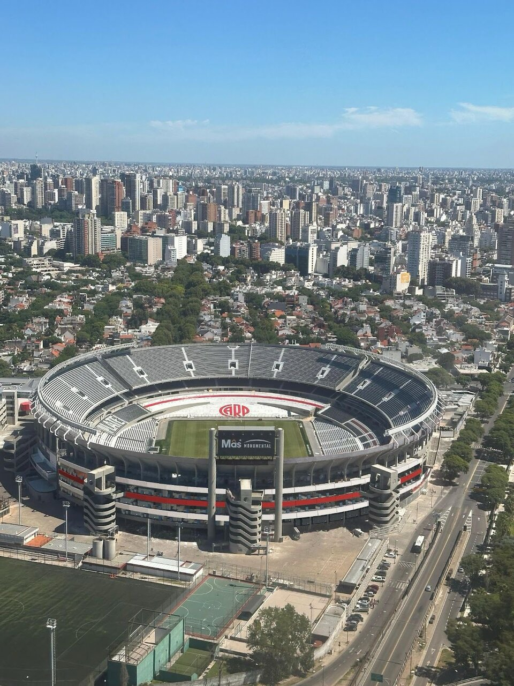
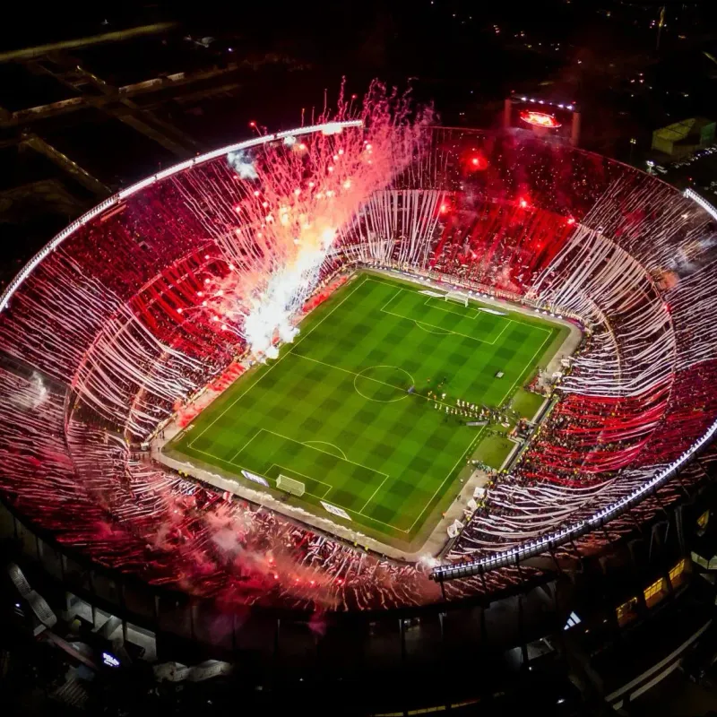

27/09/1936
Construcción del Monumental
El 27 de septiembre comeinza la
construcción del estadio Monumental.
Las obras están a cargo del estudio Aslan
y Ezcurra Arquitectos.
26/05/1938
Se inaugura el Monumental
El 26 de mayo ante 70.000 personas se
Inaugura el Monumental con un amistoso
entre River y Peñarol. El conjunto local
vence por 3 a 1.
1941
River obtuvo el título en el cemento de Núñez.
Primer eslabón de una cadena plagada de
alegrías que parece no tener fin. La
"Herradura" --Como se conocía popularmente
el Estadio-- Se cerró parcialmente en 1958.

